A B.Sc. graduate in Computer Science and Engineering from American International University-Bangladesh (AIUB). Currently, I serve as a Research Assistant at the Advanced Machine Intelligence Research (AMIR) Lab, where I focus on Deep Learning applications in medical imaging.
My research interests lie at the intersection of Deep Learning and Computer Vision, with a particular emphasis on developing efficient and interpretable models for medical image analysis. I am passionate about leveraging artificial intelligence to enhance healthcare diagnostics and improve patient outcomes. My research work has been published in prestigious journals and conferences by leading publishers including IEEE, Elsevier, and BioMedCentral. Additionally, I am exploring emerging areas in Generative AI and Large Language Models (LLMs), investigating their potential applications in healthcare and beyond.
One research paper published in Computer Methods and Programs in Biomedicine Update.
One research paper published in Healthcare (MDPI).
One research paper published in Multimedia Tools and Applications.
Reviewed journal articles in Archives of Computational Methods in Engineering, npj Heritage Science, Artificial Intelligence Review, and Signal, Image and Video Processing journals.
One research paper published in BMC Medical Imaging.
Relevant Coursework: Data Structures, Algorithms, Research Methodology, Data Science, Data Warehousing & Data Mining, Operating Systems, Artificial Intelligence, Computer Vision & Pattern Recognition.
